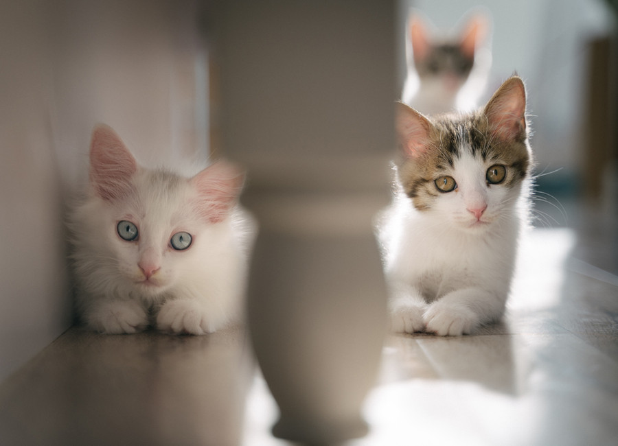
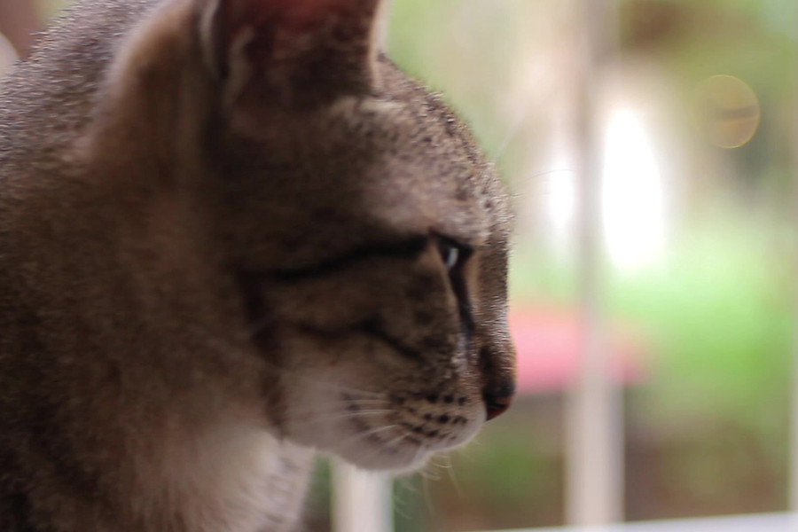

Acoge
Una casa de acogida puede ser la diferencia entre la vida y la muerte para muchos gatos.

Las acogidas son diferentes dependiendo de la edad, salud y caracter del gato.
Las casas de acogida se hacen cargo de la alimentacion del gato bajo su cargo, pero los gastos veterinarios corren a cargo de nosotras, siempre avisando antes de llevarlo para dirigiros a los que colaboran con nosotras.

Por supuesto, hacerse casa de acogida debe ser una decision meditada, pero siempre tendras la libertad de decidir hasta cuando puedes seguir siendolo. Tu lo acogeras y cuidaras durante un tiempo, pero la custodia del gato seguira siendo de la protectora.
En el caso de adopcion, la casa de acogida siempre tendra preferencia a la hora de adoptar al gato acogido.
Aunque meditada, la acogida es un compromiso temporal.